Cores
Cores primárias:
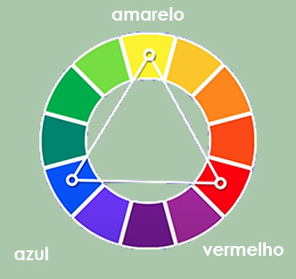As cores primárias são compostas pelo: amarelo, vermelho e azul.
Cores secundárias:
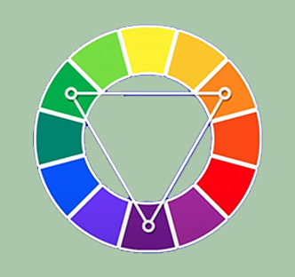As cores primárias são compostas pelo: laranja, violeta e verde.
Cores terciárias:
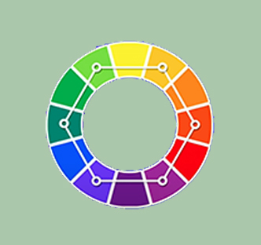As cores primárias são compostas pelo: laranja, violeta e verde.
Temperatura de cores:
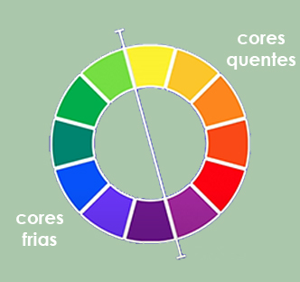As cores dividas em cores quentes e cores frias.
Cores complementares:
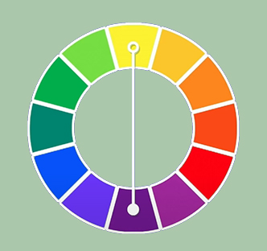As cores complementares são aquelas que dão um contraste da cor principal, sendo ela a cor oposta.
Cores análogas:
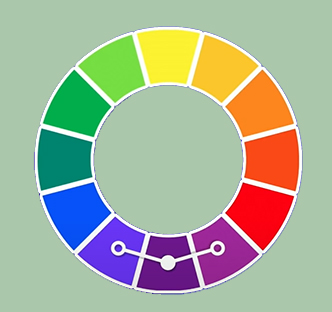As cores análogas são cores que estão lado a lado da cor escolhida, dando toque de suvisação.
Cores análogas e uma complementar:
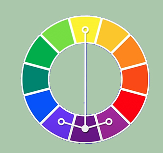As cores análogas são cores que estão lado a lado da cor escolhida, dando toque de suvisação, tendo ainda, a cor oposta da princial como a cor complementar gerando o contraste.
Cores análogas relacionadas:
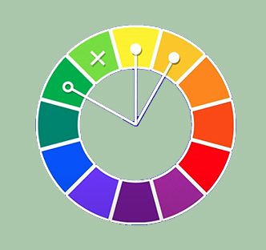As cores análogas relacionadas sao uma outra probabilidade na escolha da paleta de cores.
Cores intercaladas:
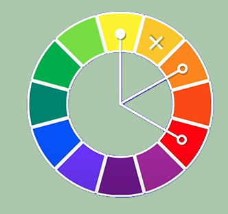As cores análogas são uma outra probabilidade na escolha da paleta de cores.
Cores triádicas:
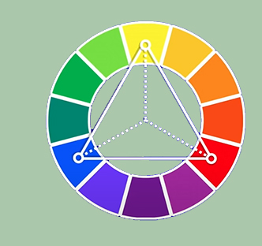As cores triádicas são uma outra probabilidade dentro das cores intercaladas na escolha da paleta de cores.
Cores em quadrado:
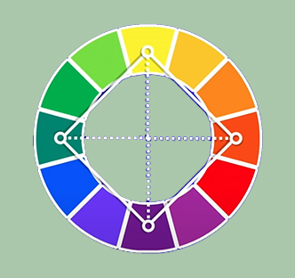As cores em quadrado são uma outra probabilidade dentro das cores intercaladas na escolha da paleta de cores.
Cores tetrádicas:
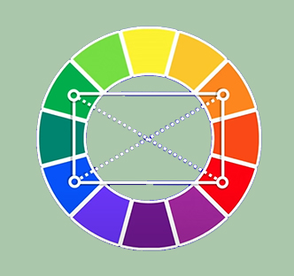As cores tetrádicas são uma outra probabilidade dentro das cores intercaladas na escolha da paleta de cores.
Cores monocromia
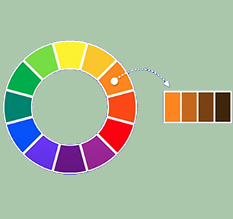As cores monocromia trabalha apenas com uma cor, e nela é modificado duas caracteristicas: a saturação e a luminosidade. Faremos isso por três vezez e teremos uma paleta de quatro cores.